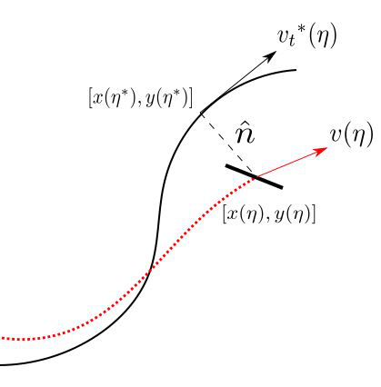

Major Projects
Trajectory Planning and control of 2D quadcopter
Undergraduate thesis, IIT Bombay
In this project, I worked on motion planning of a 2D bot in cluttered environment and control algorithms for trajectory tracking
 To generate optimal trajectories through obstacles, the dynamics were discretized using motion primitives based trajectory (Brescianini and DAndrea (2018)). Thus, the optimal control problem was converted into a graph search, which was solved using A* graph search algorithm. The velocity controlled trajectories generated trapezoidal profile which was easy to obtain, but significantly deformed the optimal path. Conversely, jerk (rate of acceleration) controlled trajectories were more smooth. But simulation time for graph search in in higher dimensional space was very slow. To circumvent this, trajectory refinement (reference) was used which used sub-optimal trajectories in lower dimensional space as heuristic for higher dimensions. The resulting trajectories are shown in the image below:
To follow the trajectories, cascade PID controller architectures were implemented. Initially, the dynamics were linearized
for simplicity, but the nonlinear controller was found to have much better performance during dynamically demanding tasks.
Link to the report